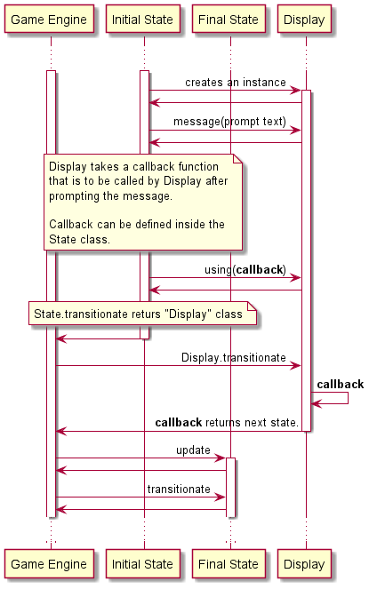

state module
- class state.Display
Bases:
state.StateThis state is reached from any state that requests showing a message.
usage example:
message, handler = self.handle_answer_rerol() return (self.get_state('Display') .message(message) .using(handler))
- get_message() str
- Returns
message to be displayed
- Return type
str
- message(message: str) state.State
Sets the message that should be shown to the player. :return: this state. Use it to chain setup calls. :rtype: State
- next_state(next_state: state.State) state.State
- transitionate(game_data: game_rules.GameData)
Uses the callback function defined in the uses function to perform the transitionate step.
- Parameters
game_data – Game information.
- update(game_data)
Does nothing still
- using(function) state.State
Use this method to define the callback function to be used during this display execution.
- Returns
this state. Use it to chain setup calls.
- Return type
- class state.GameOver
Bases:
state.StateThis state is reached when player has died in the game.
- transitionate(game_data)
Moves the game to a different state depending on the state transitions.
- Parameters
game_data – Holds the game state data (
GameData).
- PerformActivity transitions are the following:
Transition
New State
K_ESCAPE
Players going back to the Looby state from GameOver state should wait for the next game round.
- update(game_data)
There are no updates for game data from this state.
- class state.GameStart
Bases:
state.StateThis state is reached after players are registered and the players group is ready to start the game. During this state, roles and characters are randomly assigned.
- transitionate(game_data)
Moves the game to a different state depending on the state transitions.
- Parameters
game_data – Holds the game state data.
- update(game_data: game_rules.GameData)
Uses the game data infrastructure to assign characters and roles to players.
- class state.Lobby
Bases:
state.StateReached at the very begining of the game start and it is used to register players in the game.
- handle_answer_add_user(game_data: game_rules.GameData)
High-order function, returns a message that should be shown to the player and the function that should be used to handle player’s response to the displayed question. usage example:
message, handler = self.handle_answer_add_user(game_data) return (self.get_state('Display') .message(self,message) .using(handler))
- transitionate(game_data)
- Lobby transitions are the following:
Transition
New State
K_ESCAPE
Players < 1
K_RIGHT
- Parameters
game_data – Holds the game state data.
Note
Players should be added manually.
- update(game_data: game_rules.GameData)
Lobby just waits for the players to be registered. Future implementations will add options to create new play rooms and options to allow users to register in those game rooms. .. todo:: Implement cooperative mode.
- class state.PerformActivity
Bases:
state.StateThis state is reached when player has thrown the dice and has made the decision about what actions should be performed. It is important to remark that there are actions available for other players that have been given by the specific role or character each player is assigned to. So, players may decide to activate those actions and this is the state where that occur.
- transitionate(game_data)
Moves the game to a different state depending on the state transitions.
- Parameters
game_data – Holds the game state data (
GameData).
- PerformActivity transitions are the following:
Transition
New State
Always
Note that transition to PlayGame state is automatic.
- update(game_data: game_rules.GameData)
This method will enable character specific and role specific actions and will execute the actions that any given player has decided to use. Only the first player that claims the action will be allowed.
- class state.PlayGame
Bases:
state.StateThis state is reached after roles and characters have been assigned. During this state, players throw the dice until their turns end and current player gets ready to execute actions.
- apply_rules(game_rules: game_rules.GameRules, game_data: game_rules.GameData)
This method uses the infrastructure of
GameRulesclass to apply the game rules to the players in the game.
- handle_answer_rerol()
High-order function, returns a message that should be shown to the player and the function that should be used to handle player’s response to the displayed question. usage example:
message, handler = self.handle_answer_rerol() return (self.get_state('Display') .next_state(self) .message(message) .using(handler))
- transitionate(game_data: game_rules.GameData)
Moves the game to a different state depending on the state transitions.
- Parameters
game_data – Holds the game state data (
GameData).
- PlayGame transitions are the following:
Transition
New State
Player is dead
K_ESCAPE
Dice re-roll ends
Dice re-roll available
Note
Display class will ask the player to choose between end turn or throw the dice again.
- update(game_data: game_rules.GameData)
Applies dice rules as required after each dice throw.
- class state.Quit
Bases:
state.StateThis state is reached from Lobby state when the player wants to end the game.
- update(game_data)
Gracefully closes connections stablished during the game and releases claimed resources before closing the game.
- class state.State
Bases:
objectGame engine is based on state machine theory. Generic state.
- get_state(state_class_name) state.State
Returns a
Stateobject with current game state ready to execute next action.
- set_transitionable(enabled: bool)
Use this function to control the speed of the game states transitions. When transitionable is set to false, the game’s screens transitions will stop until transitionable is set to true.
- transitionate(game_data: game_rules.GameData)
Abstraction function to be rewritten by sub-classes to provide desired behavior depending on game state.
- traverseState(game_data: game_rules.GameData)
Performs current state actions, update players stats and transitions to next state.
- update(game_data: game_rules.GameData)
Abstraction function to be rewritten by sub-classes to provide desired behavior depending on game state.